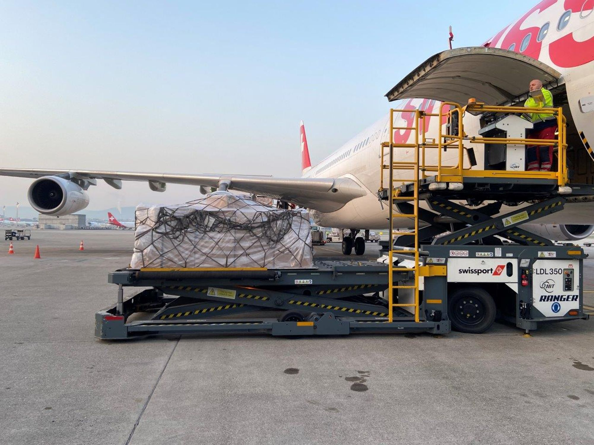

Luftbrücke nach China
SVP-Politiker auf Mission Schutzmaske
Über eine Million Schutzmasken flog die Swiss am Wochenende aus Hongkong in die Schweiz. Im Cockpit sass SVP-Nationalrat und Pilot Thomas Hurter.

Es dämmerte schon, als der Airbus A340 am Samstagmorgen um 6.05 Uhr in Zürich auf der Landebahn aufsetzte. Über zwölfeinhalb Stunden zuvor war sie in Hongkong gestartet. Mit leerem Passagierraum, aber kostbarer Fracht. Im Bauch des Jets befanden sich rund 20 Tonnen medizinische Masken, Anzüge und Brillen. Schutzmaterial, das von Spitälern, Pflegeheimen und Apotheken in der Schweiz wegen der Corona-Pandemie dringend benötigt wird.